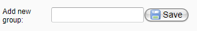
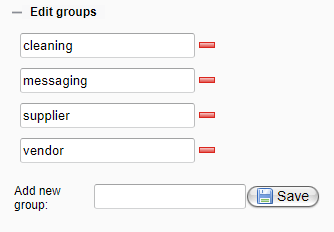
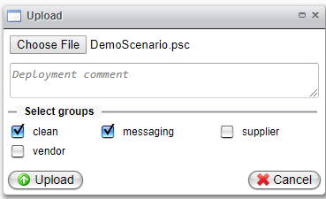
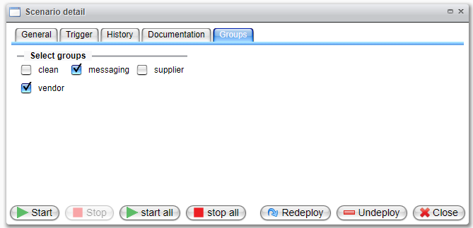
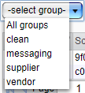
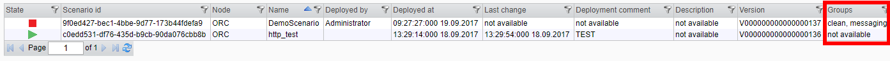

Scenario Grouping

Topic content
For a better management of deployed scenarios, Orchestra provides a grouping mechanism for scenarios. Therefore you can declare individual groups and add the scenarios to the groups. The groups are filterable in all scenario specific tables, e.g main scenario overview or process monitoring.
Defining groups
To declare, change or delete groups select section in the left hand panel and select the tab in the appearing tab panel.
Scenario groups
You will see a widget, to declare new groups:

Here you can add personal groups, e.g groups for scenario types, like vendor, supplier, cleaning or messaging. For every new group a new entry appears in the overview, which would look for the given example like this:

The groups are editable and deletable very easy in this view.
Group assignment
The declared groups can be assigned to the scenarios. Every scenario can be assigned to multiple groups and every group can have multiple scenarios assigned. Therefore you have two options:
•Assignment in deployment dialog: In deployment dialog the declared groups are visible. So after selection of a scenario file, you can assign the new scenario to the intended groups, by checking the specific check box. The newly deployed scenario is now assigned to this group. For the example above, the dialog would look like this:

•Assignment in scenario details: The second assignment possibility is provided in scenario detail dialog. This dialog can be opened, by double clicking the scenario in main scenario table. The dialog contains a tab panel, which has a tab, called . Here you can see the selected groups for this scenario and change the assigned groups. The dialog looks for the example above like this:

Group filtering
To use the declared groups, the scenario specific tables provide a filter element. A new drop down element is available, which contains all groups and allows the filtering of the table for the groups:

Additionally you can see the assigned groups in a new column of the main scenario table:
